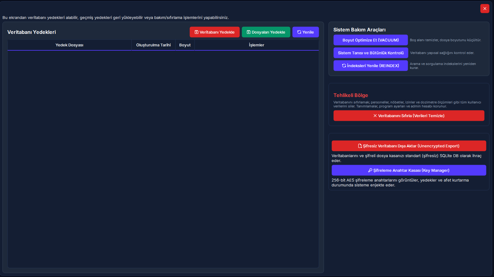
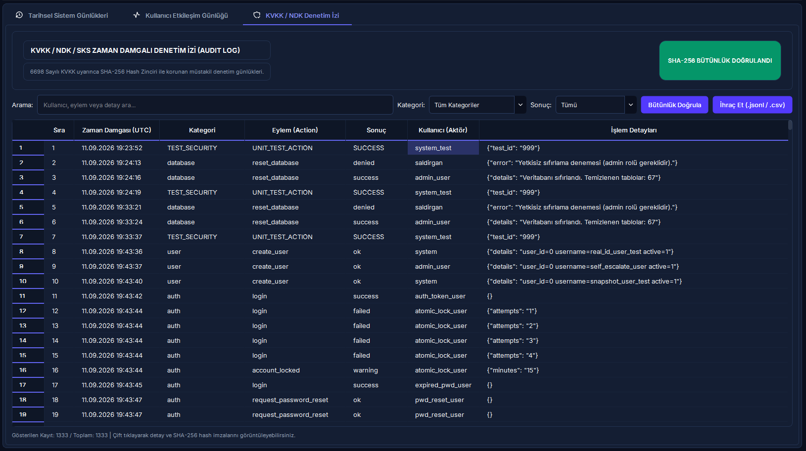

Veritabanı Bakım, Kriptografik Yedekleme & Sistem Güvenliği
PostgreSQL motor optimizasyonu (VACUUM ve REINDEX), 256-bit PBKDF2/AES şifreli yedekleme ve felaket kurtarma (Disaster Recovery), 3 kademeli korumayla fabrika ayarlarına sıfırlama, SHA-256 kriptografik denetim izi ve global çökme yakalama rehberi.
Hızlı Reçete: Şifreli Yedekleme ve Motor Optimizasyonu
Verilerin tam dökümünü güvenli şifrelemeyle arşivlemek ve veritabanı ölü satırlarını temizlemek.
[Veritabanı Bakım] ekranında [Veritabanı Yedekle] ve [Dosyaları Yedekle] butonlarına basın; olası format/sunucu değişimi için [Güvenlik Anahtarı] kartını harici ortama aktarın; ardından [Boyut Optimize Et (VACUUM)] aracını çalıştırın.
Veritabanı 256-bit AES ile şifrelenip zaman damgasıyla saklanır; PostgreSQL motoru ölü satırları temizleyip disk alanını geri kazandırır.
5N1K Kural ve Fonksiyon Tablosu
Veritabanı yedekleme, geri yükleme, motor optimizasyonu ve denetim araçlarının çalışma mantığı.
Kritik Sahada Yanlış Bilinen Kurallar (Mit Avcısı)
Saha Mit Avcısı: "Veritabanını Sıfırlarsam Her Şey Silinir mi?"
En Sık Yapılan Yönetici YanılgısıYanlış İnanış: "Veritabanını Sıfırla butonuna basarsam hastane departmanlarım, unvanlarım, tatil takvimim ve admin şifrem de silinir; programı ilk günkü gibi baştan kurup ayarları yeniden girmem gerekir."
Doğru Gerçek: HAYIR. RADPYS mimarisi referans tanımları ile operasyonel hareketleri birbirinden kesin olarak ayırmıştır. Sıfırlama işlemi yalnızca hareket tablolarını (personeller, nöbet çizelgeleri, izinler, dozimetre ölçümleri, arızalar) temizler. Departmanlar, Unvanlar, Resmi Tatiller, Program Ayarları, Sistem Rolleri, Yetki Şablonları ve `Admin` hesabı mutlak koruma altındadır; sistem sıfır işlem verisiyle ancak eksiksiz kurumsal yapısıyla anında kullanıma hazır kalır.
Güvenli Bakım ve Felaket Kurtarma Akış Şeması
Yedekleme, geri yükleme ve fabrika ayarlarına sıfırlama işlemlerinin güvenlik aşamaları.
Arayüz Ekran Görünümleri
Masaüstü Veritabanı Bakım ve Birleşik Log Merkezi pencerelerinin kontrol panelleri.


Adım Adım Operasyon Rehberi
Yedekleme, geri yükleme, motor bakımı ve sıfırlama işlemlerinin eksiksiz adımları.
Şifreli Veritabanı ve Evrak Yedeği Alma
Sol menüden [Veritabanı Bakım] ekranına girin. Pencerenin sol üstündeki [Veritabanı Yedekle] butonuna basın. Arka planda PostgreSQL dökümü alınıp 256-bit AES ile şifrelenecek ve data/backups/ klasörüne .dump dosyası olarak kaydedilecektir. Yüklü personel evraklarını ve taranmış belgeleri de arşivlemek için yanındaki [Dosyaları Yedekle] butonuna tıklayın. Olası format veya sunucu değişikliğinde yedeği açabilmek için [Güvenlik Anahtarı] butonuna basıp Sudo doğrulamasıyla kurtarma anahtarınızı harici diskinize mutlaka kaydedin.
Eski Bir Yedeği Geri Yükleme (Felaket Kurtarma)
Tablodan dönmek istediğiniz tarihli yedeği bulun ve en sağdaki [Yükle] butonuna basın. Ekrana gelen kritik uyarı penceresinde [Evet]'e tıklayın ve Sistem Yöneticisi şifrenizi (Sudo Doğrulaması) girin. Sistem yedek anahtarını yerel kasadan, harici diskten veya geçmiş anahtar arşivinden otomatik arar. Bilgisayarınıza format atılmış veya sistem yeni kurulmuşsa ekrana gelen Yedek Şifreleme Anahtarı Gerekli modalına 32 karakterlik anahtarınızı girin, [Dosyadan Seç] ile harici diskinizdeki kurtarma kartını (radpys_yedek_kurtarma_anahtari.txt) seçin ya da [Cihaz Kimliğiyle Çözmeyi Dene] butonuna tıklayarak donanım afet kurtarma anahtarını anında test edin. Geri yükleme tamamlandıktan sonra uygulamayı kapatıp yeniden başlatın.
PostgreSQL VACUUM ve REINDEX Motor Bakımı
Sağ taraftaki [Sistem Bakım Araçları] kartına gidin. Silinen satırların bıraktığı boş alanları motora geri kazandırmak için [Boyut Optimize Et (VACUUM)] butonuna basın. İşlem bitince önceki ve yeni boyut farkını gösteren bilgi kutusunu onaylayın. Arama indekslerini hızlandırmak için [İndeksleri Yenile (REINDEX)] butonuna tıklayarak indekslerin baştan kurulmasını sağlayın.
Sistem Tanısı ve Otomatik Onarım Sihirbazı
Bakım panelindeki [Sistem Tanısı ve Bütünlük Kontrolü] butonuna tıklayın. Açılan sihirbaz şemadaki yetim nöbet kayıtlarını, hatalı izin tarihlerini ve trim edilmemiş isim boşluklarını tarar. Sarı anomali ikazı varsa üstteki [Otomatik Düzelt & Onar] butonuna basıp Sudo şifrenizi girin. Sistem hataları saniyeler içinde şema düzeyinde onaracaktır.
Tehlikeli Bölge — 3 Kademeli Fabrika Ayarlarına Sıfırlama
Sağ alttaki kırmızı [Tehlikeli Bölge] alanında bulunan [Veritabanını Sıfırla (Verileri Temizle)] butonuna basın. Açılan kutuya tam olarak büyük harflerle SIFIRLA yazıp butona tıklayın. Ardından yönetici şifrenizi girin. Sistem tüm personelleri, nöbetleri ve izinleri sıfırlayacak; ancak tanımlarınız, departmanlarınız ve admin hesabınız kesinlikle korunacaktır.
Beklenmeyen Hata (Crash Dialog) Anında Teknik Destek Bildirimi
Uygulama beklenmedik bir hatayla karşılaştığında kapanmaz; ekrana koyu temalı Beklenmeyen Hata penceresi gelir. [Hata Detayını Kopyala] butonuyla traceback dökümünü panoya alabilir veya [E-Posta Gönder] butonuna tıklayarak doğrudan radpys.iletisim@gmail.com adresine hazır formatta teknik hata raporu iletebilirsiniz.
Sıkça Sorulan Sorular (SSS)
Alınan bir yedeği başka bir sunucuya veya yeni bilgisayara taşıyıp yükleyebilir miyim?
Evet. Yedek dosyası 256-bit AES ile şifrelendiğinden geri yükleme sırasında güvenlik anahtarı doğrulanır. Yedekle birlikte harici diske aldığınız kurtarma kartını (radpys_yedek_kurtarma_anahtari.txt) seçebilir, anahtarınızı elle girebilir veya sistemin donanım bazlı afet kurtarma güvencesi sayesinde Cihaz Kimliği (Machine ID) üzerinden kurtarma gerçekleştirebilirsiniz. Anahtar doğrulandıktan sonra veritabanı anında geri yüklenir.
VACUUM ve REINDEX işlemlerini ne sıklıkla çalıştırmalıyım?
Hastanelerdeki yoğun veri trafiğine bağlı olarak, [Boyut Optimize Et (VACUUM)] işleminin ayda bir kez veya toplu personel içe aktarımı/silme sonrasında çalıştırılması önerilir. [İndeksleri Yenile (REINDEX)] ise arama ve rapor filtrelerinde gözle görülür bir yavaşlama hissedildiğinde veya her 3-6 ayda bir rutin bakım olarak yapılmalıdır. Her iki işlem de arka planda güvenle yürütülür.
Yedek geri yüklendikten sonra neden programı kapatıp açmam gerekiyor?
PostgreSQL geri yükleme işlemi veritabanı tablolarını ve otomatik artan ID sayaçlarını (sequence) eski duruma döndürür. Ancak masaüstü uygulamasının belleğinde (RAM) halihazırda açık olan sekmeler ve oturum önbellekleri eski verileri tutmaya devam edebilir. Arayüzün yeni veritabanı durumuyla %100 senkronize çalışabilmesi için programın yeniden başlatılması zorunludur.
Yanlışlıkla 'Veritabanını Sıfırla' butonuna basarsam geri dönüşü var mıdır?
Yanlışlıkla basılması 3 kademeli emniyet kilidiyle engellenmiştir (Yalnızca Admin yetkisi, büyük harfle "SIFIRLA" yazma şartı ve yönetici şifre doğrulaması). Ancak bu 3 adımı da tamamlayıp veritabanını sıfırladıysanız, tek geri dönüş yolu sıfırlamadan hemen önce aldığınız bir yedeği [Yükle] butonuyla geri yüklemektir. Bu nedenle her sıfırlama öncesinde otomatik veya manuel yedek alınması şarttır.
Beklenmeyen hata (Crash) penceresi çıktığında üzerinde çalıştığım veriler kaybolur mu?
RADPYS'nin global istisna yakalayıcısı (CrashDialog), işletim sisteminin programı zorla kapatmasını (Crash/Terminate) engeller. Hata penceresi çıktığında veritabanı bağlantısı açık kalır ve o ana kadar veritabanına kaydedilmiş tüm verileriniz güvendedir. Yalnızca form üzerinde yazıp henüz [Kaydet] butonuna basmadığınız alanlar etkilenebilir. Hata dökümünü e-posta ile iletip pencereyi kapattıktan sonra güvenle çalışmaya devam edebilirsiniz.